Understanding the Impact of Marketing Strategies on Revenue: A Comprehensive Analysis
In today's digital age, understanding the impact of different marketing strategies on revenue is crucial for businesses aiming to optimize their marketing efforts and maximize profits. This blog delves into a comprehensive analysis performed to evaluate various marketing channels, customer demographics, and their influence on revenue generation.
Business Understanding
Our organization seeks to comprehend how different types of marketing affect the revenue generated by customers. The dataset at our disposal includes demographic data captured through website tracking, which allows for a detailed market segmentation based on age and income. By analyzing customer engagement metrics and responses to voucher-based incentives, we aim to evaluate the effectiveness of our marketing strategies and identify the channels that generate the most revenue.
| Attribute | Description |
|---|---|
| Revenue (GBP) | This is the revenue from the latest order that was made by this customer. |
| Advertisement Channel | This is the advertisement medium that brought them to the website, which includes:
|
| Estimated Age | This is an estimated age of the customer according to the website tracking software. |
| Estimated Income (GBP) | The estimated income according to website tracking software. |
| Time on website per week (Seconds) | The estimate average time that the customer spends on the website per week. |
| Seen Voucher | Indicates if the customer has seen any discount voucher popup. |
Data Understanding
The dataset comprises 400 observations, collected primarily from the drinks@home website, ensuring high data quality with no missing values. Key steps in our data analysis included:
Outlier Analysis
1. Revenue Outliers:
We created a boxplot to identify revenue outliers. Four observations were identified with exceptionally low revenue and were subsequently removed to ensure these did not skew the analysis.
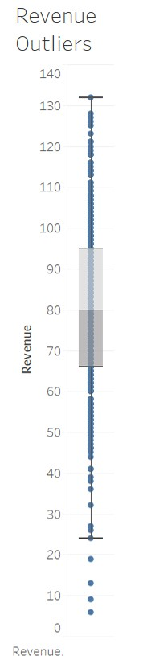2. Time Spent on Website:
Similarly, a boxplot was used to detect outliers in the time spent on the website. Six observations with unusually low engagement times were removed. The plot indicated that these customers might have logged in only once, explaining the low interaction time.
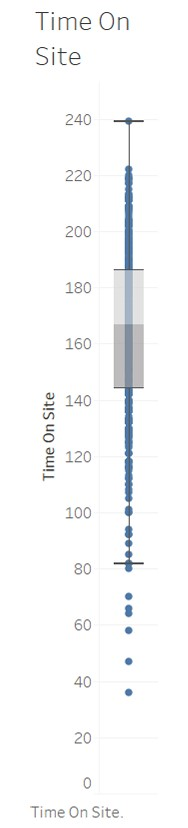Demographic Analysis
1. Estimated Income:
The dataset revealed a right-skewed distribution of estimated income, with the majority of customers earning between 20,000-26,000 GBP. This skewness suggests that our target audience primarily consists of lower to middle-income individuals. A histogram of estimated income highlighted this distribution.
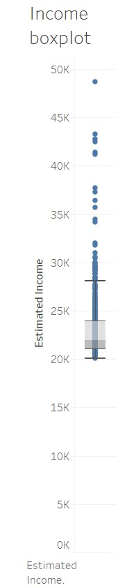2. Age Distribution:
Analyzing the age data, we found four observations where customers were below 15 years old. These records were removed as they were deemed inaccurate. Age groups were then analyzed using a boxplot to visualize the revenue generated by different age segments. The highest median revenue was observed in the 50+ age group, while the 40-44 age group had the lowest median revenue. The 25-29 age group exhibited the widest spread in revenue, indicating diverse spending behaviors within this cohort.
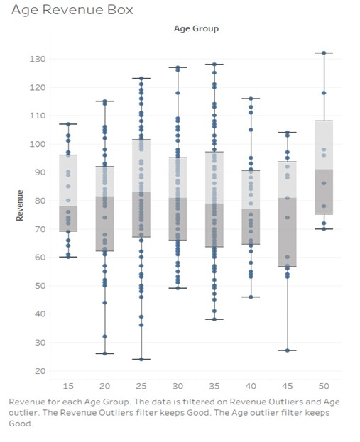Marketing Channel Analysis
Channel Effectiveness:
We evaluated the revenue generated from different marketing channels using boxplots. Influencer-based marketing emerged as the most effective, generating the highest median revenue with low variability. Social media and search engine advertisements also contributed significantly but showed a broader range of revenue outcomes. These findings underline the varying effectiveness of different marketing strategies, with influencer marketing standing out for its consistent performance.
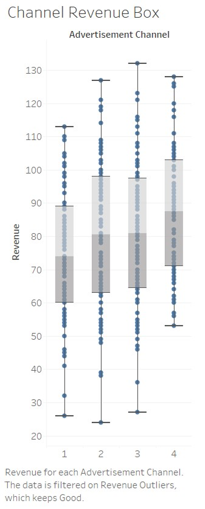Income and Revenue Relationship
Income Binned Analysis:
Grouping the income data into bins of 2,000 GBP intervals, we created boxplots to examine the relationship between income and revenue. Significant differences in median revenue values across income groups were observed. An ANOVA test confirmed that these differences were statistically significant, indicating that income is a strong predictor of revenue.
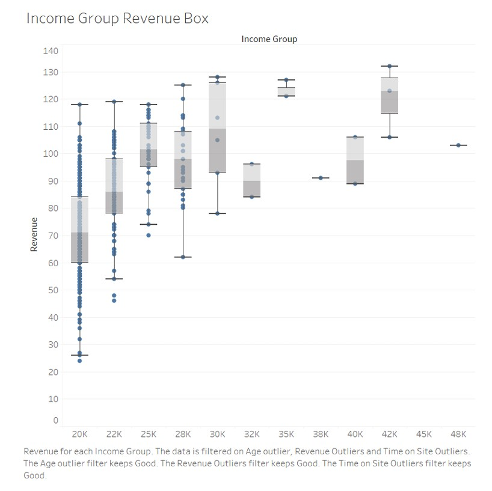Correlation Analysis
Time Spent vs. Revenue:
We explored the relationship between time spent on the website and revenue. Surprisingly, there was no significant difference in revenue despite variations in time spent, suggesting other factors might play a more critical role in influencing customer spending.
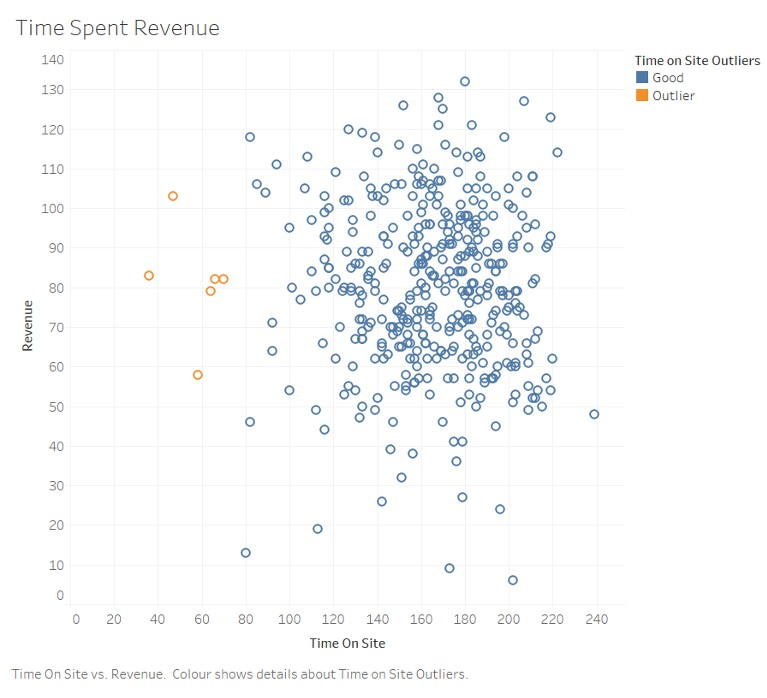Conclusion from EDA
The EDA provided several key insights:
- Customer Segmentation: Our customer base predominantly falls into lower to middle-income categories, with significant spending differences across age and income groups.
- Marketing Channel Effectiveness: Influencer-based marketing is highly effective, with social media and search engine advertisements also performing well, albeit with greater variability.
- Voucher Impact: Vouchers significantly boost revenue, underscoring the importance of targeted incentive programs.
- Time Spent Insights: Time spent on the website does not correlate strongly with revenue, indicating the need to explore other engagement metrics.
By leveraging these insights, we can tailor our marketing strategies to target the most profitable customer segments and channels, thereby optimizing our overall revenue generation. The next step involves using these EDA findings to inform our predictive modeling and strategic recommendations.
Regression Analysis and Outcomes
To understand the factors that affect revenue positively or negatively, we employed a linear regression model. This model helps explain the relationship between various predictors and revenue, allowing us to quantify the impact of each factor.
Model Significance
The linear regression model demonstrated a significant explanatory power with an R² value of 0.54, indicating that 54% of the variation in revenue can be explained by the model. The ANOVA table confirmed the model's overall significance with an F-value of 66.05.
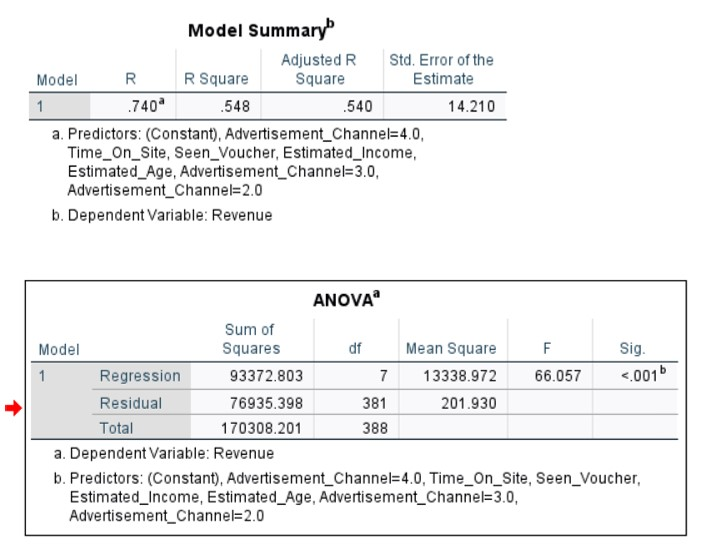Positive Influences on Revenue
The regression analysis identified several key factors that positively impact revenue:
- Seen Voucher: The presence of a voucher increases customer spending by 19.8 GBP on average.
- Estimated Income: Higher estimated income correlates with increased revenue.
- Marketing Channels: Social Media, Search Engine, and Influencer marketing channels all have a positive impact on revenue.
Assumptions Validation
To ensure the validity of our regression model, we checked the following assumptions:
- Residuals Normality: The histogram of unstandardized residuals showed a normal distribution, validating this assumption. 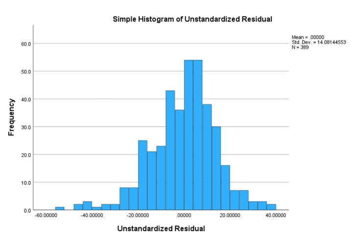
- Homoscedasticity: The scatterplot of standard residuals against predicted values indicated some heteroscedasticity beyond a revenue of 100, but the assumption was largely satisfied below this threshold. 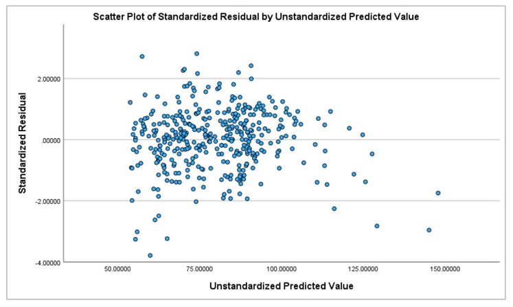
- Multicollinearity: Tolerance and Variance Inflation Factor (VIF) values were within acceptable ranges (VIF values between 1-1.5), indicating no significant multicollinearity issues. 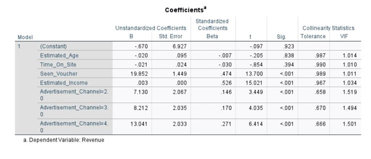
Strategy Evaluation
We evaluated three marketing strategies based on the regression outcomes:
- Targeting Customers Older Than 45: Although customers aged 45+ spend more, the data is skewed with only 26 customers in this group. The regression model showed no significant relationship between age and revenue.
- 20 GBP Voucher on Next Purchase: This strategy had the highest impact on revenue, increasing spending by an average of 19.8 GBP when a voucher was seen.
- Influencer Marketing: Effective with positive revenue impacts, though it requires careful consideration of cost and reach.
Recommendations
Based on our findings, we recommend proceeding with a 20 GBP voucher for customers on their next order, given its significant impact on revenue. Further data on voucher usage and its effect on profits is necessary for a comprehensive evaluation. Additionally, improving our understanding of customer interactions on the website could provide deeper insights for optimizing the user experience.
Conclusion
Our regression analysis identified several factors with a significant impact on revenue, including Seen Voucher, Estimated Income, and marketing channels like Social Media, Search Engine, and Influencer marketing. While vouchers had the highest immediate returns, continuous assessment of their impact on profits is crucial. Future efforts should focus on enhancing data collection related to customer website usage and further refining marketing strategies to sustain revenue growth.